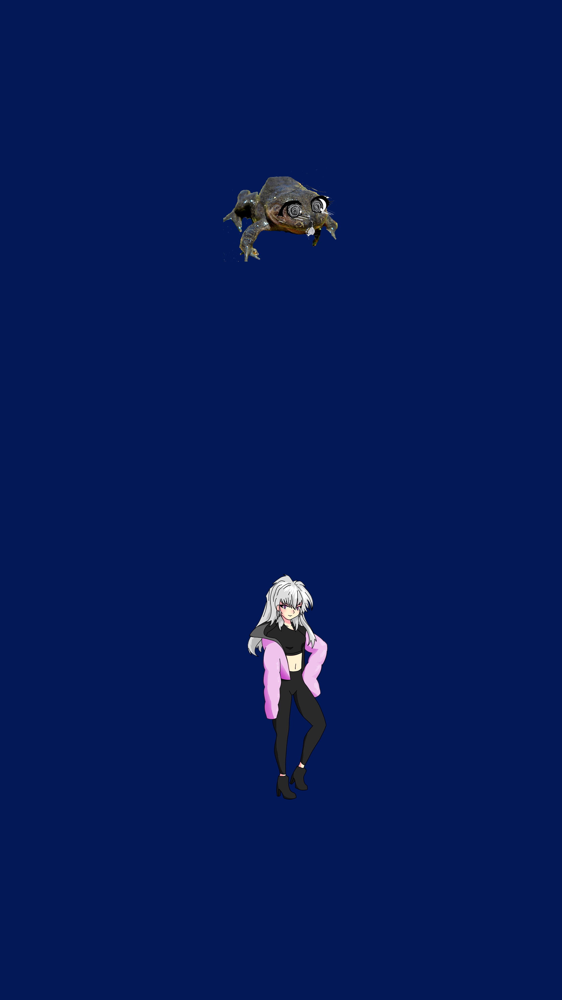

DESCRIPCION
ATENCIÓN: Esta página simula la campaña de microfinanciación de un videojuego ficticio (no representa un producto real). Práctica de Multimedia, 1º GDDV - Curso 20/21 (Móstoles), URJC. La URJC no se hace responsable del contenido expuesto por el autor.
Un día, como otro cualquiera, serás visitado por un pañuelo usado mágico que te dará la opción de viajar a un nuevo mundo de ensueño. Tras aceptar, este te teletransportará al maravilloso mundo de Rumcia en el cual conocerás a un sin fin de personajes únicos y carismáticos. Sumérgete en este vasto universo plagado de minijuegos e historias por contar pero con precaución, ya que tus acciones tendrán consecuencias .
Rumcia Lover’s, simplemente se tu mismo.
HISTORIA
Una de las caracteristicas fuertes de Rumcia Lover’s es su comica y entretenida historia llena momentos muy graciosos e incluso emotivos que de vez en cuando te sacaran alguna lagrimilla. Todo comenzará contigo un día cualquiera en tu dormitorio,allí, cansado de la vida tan repetitiva y monotoma que tienes, se te presentará la oportunidad de tu vida.
Hankachi, un pañuelo usado y mágico, te dará la ocasión de poder viajar a su mundo y así empezar una nueva vida como un estudiante de preparatoria, joven y lleno de energía.
Tras aceptar su oferta, comenzará el viaje a través de un portal y tan pronto te des cuenta llegarás al maravilloso mundo de Rumcia, una vez allí serás despertado por tu supuesta amiga de la infancia en este mundo, ¡¡la kawaii Rana-chan!!. Desde ese momento sabrás que tu vida realmente acaba de cambiar para siempre y que te esperaran miles de momentos junto a los personajes que conforman el vasto mundo de Rumcia.

Ve a la escuela, conoce a todos los personajes que puedas, comparte miles de momentos juntos desde estudiar juntos para un examen hasta pasar todo un fin de semana juntos en la playa. Rumcia Lover’s , simplemente se tu mismo.
GAMEPLAY
Rumcia Lovers’s es una fusión entre un isekai y un otome con toques de RPG.
Este videojuego se centrará en las citas y relaciones que entables con otros personajes, teniendo en cuenta las decisiones que tomes ya que en función de estas, podrán surgir ciertos eventos que decidirán tu futuro y el del resto de personajes. Por poner un ejemplo, un personaje como puede ser XXX, según el trato que le des en eventos y conversaciones tempranas, podras hacer que se convierta desde tu amada hasta tu peor enemiga. De ahí nuestro eslogan “Rumcia Lover’s, simplemente se tu mismo” ya que para una mayor inmersión en este universo, deberás tomar las decisiones con tu corazón.
Pero eso no es todo, lo que diferencia a Rumcia Lover’s del resto de otomes son sus variadas mecanicas y jugabilidad puesto que, pese a que las conversaciones sí son típicas de un otome en el que tenemos al personaje con el que estamos entablando conversación estatico y un cuadro de dialogo, la manera de recorrer este vasto mundo es muy distinta….
¡¡Podremos ver a nuestro personaje en tercera persona y recorrer con él, el mundo de Rumcia!!, además, aparte de esta característica, al igual que en el mundo real, deberemos ir a comprar, dormir, hacer la comida, hacer los deberes con amigos…. Entre otras muchas tareas cotidianas y no tan cotidianas que realizaremos a través de los cientos de divertidos minijuegos con los que cuenta esta maravillosa experiencia.
 >